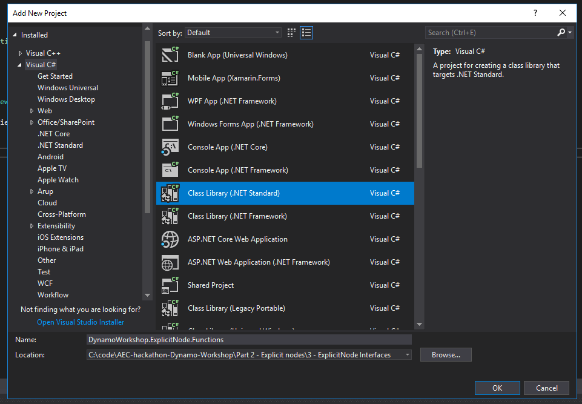
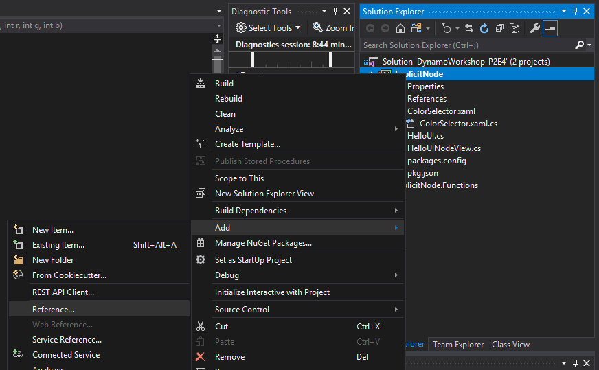
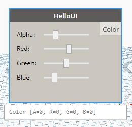

3 - Explicit Node Functions
In this final part we are going to add more bindings to the UI, add an output port, and have our node return something.
- More bindings
- Executing functions
- The BuildOutputAst method
- Expiring the node
- Final touch
- Serializing / Deserializing nodes
More bindings
Add the following fields and properties to HelloUI.cs:
private int _sliderValueA;
private int _sliderValueR;
private int _sliderValueB;
private int _sliderValueG;
public int SliderValueA { get => _sliderValueA; set { _sliderValueA = value; RaisePropertyChanged("SliderValueA"); }}
public int SliderValueR { get => _sliderValueR; set { _sliderValueR = value; RaisePropertyChanged("SliderValueR"); } }
public int SliderValueB { get => _sliderValueB; set { _sliderValueB = value; RaisePropertyChanged("SliderValueB"); }}
public int SliderValueG { get => _sliderValueG; set { _sliderValueG = value; RaisePropertyChanged("SliderValueG"); } }
If you debug your code now you'll see the binding to the UI sliders.
Executing functions
NodeModels when executed run a method called BuildOutputAst this method takes your inputs and passes them to a function which has to live in a separate assembly (in our case a separate project). Let's create it:

Then let's add the DynamoVisualProgramming.DynamoServices NuGet package and the System.Drawing reference.
Then create a new static class named Functions.cs:
using Autodesk.DesignScript.Runtime;
using System.Drawing;
namespace DynamoWorkshop.ExplicitNode.Functions
{
[IsVisibleInDynamoLibrary(false)]
public static class Functions
{
public static DSCore.Color ColorByARGB(int a, int r, int g, int b)
{
return DSCore.Color.ByARGB(a, r, g, b);
}
}
}
The BuildOutputAst method
Now we can implement BuildOutputAst inside of HelloUI.cs. First right click on theDynamoWorkshop.ExplicitNode project and add a reference to DynamoWorkshop.ExplicitNode.Functions.


Then add the BuildOutputAst function to HelloUI.cs:
public override IEnumerable<AssociativeNode> BuildOutputAst(List<AssociativeNode> inputAstNodes)
{
var sliderValueA = AstFactory.BuildDoubleNode(SliderValueA);
var sliderValueR = AstFactory.BuildDoubleNode(SliderValueR);
var sliderValueG = AstFactory.BuildDoubleNode(SliderValueG);
var sliderValueB = AstFactory.BuildDoubleNode(SliderValueB);
var functionCall =
AstFactory.BuildFunctionCall(
new Func<int, int, int, int, DSCore.Color>(Functions.Functions.ColorByARGB),
new List<AssociativeNode> { sliderValueA, sliderValueR, sliderValueG, sliderValueB });
return new[] { AstFactory.BuildAssignment(GetAstIdentifierForOutputIndex(0), functionCall) };
}
And the OutPort attributes on the node:
[OutPortNames("Color")]
[OutPortTypes("color")]
[OutPortDescriptions("Selected Color")]
Your HelloUI.cs should look like this:
using System;
using System.Collections.Generic;
using System.Linq;
/* dynamo directives */
using Dynamo.Graph.Nodes;
using Newtonsoft.Json;
using ProtoCore.AST.AssociativeAST;
namespace DynamoWorkshop.ExplicitNode
{
[NodeName("HelloUI")]
[NodeDescription("Sample Explicit Node")]
[NodeCategory("DynamoWorkshop.Explicit Node")]
[OutPortNames("Color")]
[OutPortTypes("color")]
[OutPortDescriptions("Selected Color")]
[IsDesignScriptCompatible]
public class HelloUI : NodeModel
{
//Json Constructor for Dynamo 2.0 nodes
[JsonConstructor]
private HelloUI(IEnumerable<PortModel> inPorts, IEnumerable<PortModel> outPorts) : base(inPorts, outPorts)
{
}
public HelloUI()
{
RegisterAllPorts();
}
private int _sliderValueA;
private int _sliderValueR;
private int _sliderValueB;
private int _sliderValueG;
public int SliderValueA { get => _sliderValueA; set { _sliderValueA = value; RaisePropertyChanged("SliderValueA"); }}
public int SliderValueR { get => _sliderValueR; set { _sliderValueR = value; RaisePropertyChanged("SliderValueR"); } }
public int SliderValueB { get => _sliderValueB; set { _sliderValueB = value; RaisePropertyChanged("SliderValueB"); }}
public int SliderValueG { get => _sliderValueG; set { _sliderValueG = value; RaisePropertyChanged("SliderValueG"); } }
public override IEnumerable<AssociativeNode> BuildOutputAst(List<AssociativeNode> inputAstNodes)
{
var sliderValueA = AstFactory.BuildDoubleNode(SliderValueA);
var sliderValueR = AstFactory.BuildDoubleNode(SliderValueR);
var sliderValueG = AstFactory.BuildDoubleNode(SliderValueG);
var sliderValueB = AstFactory.BuildDoubleNode(SliderValueB);
var functionCall =
AstFactory.BuildFunctionCall(
new Func<int, int, int, int, DSCore.Color>(Functions.Functions.ColorByARGB),
new List<AssociativeNode> { sliderValueA, sliderValueR, sliderValueG, sliderValueB });
return new[] { AstFactory.BuildAssignment(GetAstIdentifierForOutputIndex(0), functionCall) };
}
}
}
And finally, we need to tell Dynamo to load DynamoWorkshop.ExplicitNode.Functions.dll as well, and that's done by editing pkg.json adding at the end:
"node_libraries": [
"DynamoWorkshop.ExplicitNode, Version=1.0.0.0, Culture=neutral, PublicKeyToken=null",
"DynamoWorkshop.ExplicitNode.Functions, Version=1.0.0.0, Culture=neutral, PublicKeyToken=null"
]
If we test the code we can see the OutPort, but it's not changing when the sliders change. We need to Expire the node for it to happen!

Expiring the node
Fortunately enough, expiring the node is easy. Just call OnNodeModified() to do so. In our case we'll add that to the setter methods of each or our SliderValues:
public int SliderValueA { get => _sliderValueA; set { _sliderValueA = value; RaisePropertyChanged("SliderValueA"); OnNodeModified(); }}
public int SliderValueR { get => _sliderValueR; set { _sliderValueR = value; RaisePropertyChanged("SliderValueR"); OnNodeModified(); } }
public int SliderValueB { get => _sliderValueB; set { _sliderValueB = value; RaisePropertyChanged("SliderValueB"); OnNodeModified(); } }
public int SliderValueG { get => _sliderValueG; set { _sliderValueG = value; RaisePropertyChanged("SliderValueG"); OnNodeModified(); } }
It could be cleaner, but it'll work for now.
Final touch
As a final touch, let's preview the color generated by the sliders in the Node UI. This can be done with INodeViewCustomization as it gives us access to the Dynamo NodeView, the class that defines the nodes default appearance.
In HelloUINodeView.cs, add references to namespaces System.Windows.Media and System.Windows.Shapes. Then, add to CustomizeView method the following event handlers to track when the sliders are moved.
using System.Windows.Media;
using System.Windows.Shapes;
ui.SliderA.ValueChanged += Slider_ValueChanged;
ui.SliderR.ValueChanged += Slider_ValueChanged;
ui.SliderG.ValueChanged += Slider_ValueChanged;
ui.SliderB.ValueChanged += Slider_ValueChanged;
and then add the following method:
private void Slider_ValueChanged(object sender, System.Windows.RoutedPropertyChangedEventArgs<double> e)
{
((Rectangle)_nodeview.grid.FindName("nodeBackground")).Fill = new SolidColorBrush(Color.FromArgb(
Convert.ToByte(_model.SliderValueA),
Convert.ToByte(_model.SliderValueR),
Convert.ToByte(_model.SliderValueG),
Convert.ToByte(_model.SliderValueB)));
}
The node background color will now change accordingly.

Serializing / Deserializing nodes
If you save the custom node in a definition and load it again you will see that the sliders value persisted, that's because it's being serialized with the node.
Dynamo 2.0 makes it very easy to serialize / deserialize variables on custom nodes. To do that, a variable needs to be public, and it will be automatically saved and loaded.
To ignore a property or a field, use the [JsonIgnore] attribute and it'll be skipped.